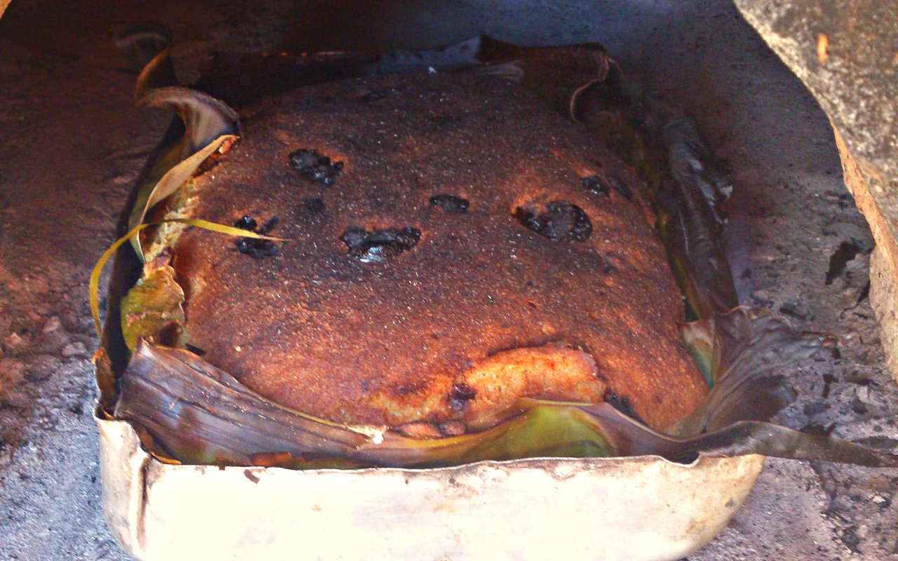
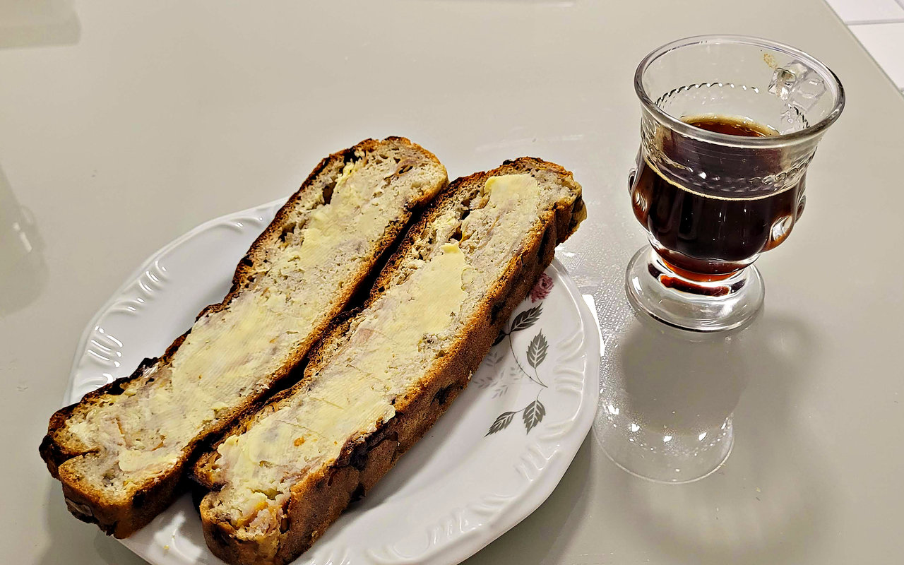

Sobre o canal
Pedais com amigos pelo Espírito Santo, e o pão que vai no logo.
O canal
O Brote na Trilha é um canal de pedais com amigos no Espírito Santo: a gente pedala, filma e conta como foi.
Cada vídeo mostra o percurso e traz, na descrição, a rota no Strava, com distância, altimetria e tempo, para quem quiser pedalar o mesmo caminho.
O que é o brote
Pronuncia-se BRÔ-te, com o "o" fechado. É o pão que aparece no logo do canal, ao lado da garrafa térmica e da bike.
O brote é um pão de milho tradicional dos descendentes de imigrantes pomeranos no Espírito Santo. O nome vem do alemão Brot, que significa "pão"; em pomerano, o de milho é o mijlchebrood.
Os pomeranos chegaram ao estado em meados do século XIX. Como o trigo não se adaptou ao clima tropical do interior, passaram a usar o milho. Por muito tempo o pão foi motivo de vergonha, e quem o comia era chamado de "broteiro" de modo pejorativo. Hoje ele é orgulho e símbolo da cultura pomerana, e em 2024 foi reconhecido como patrimônio cultural imaterial do Espírito Santo.
Como é feito
A massa leva fubá de milho, tradicionalmente moído em moinho, raízes raladas, como batata-doce, inhame, cará e aipim, sal e fermento. Depois de crescer, ela é porcionada sobre folhas de bananeira, que evitam que grude, e assada em forno à lenha até a casca escurecer.
Como se come
Com manteiga, linguiça defumada, geleia, coalhada ou café com leite. É presença certa em cafés coloniais e casamentos pomeranos.


Fontes: Slow Food Brasil (Arca do Gosto), ES Hoje e Wikipédia.